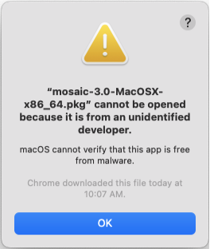

Installation#
Installer (Preferred)#
The installer for Mosaic can be downloaded from the Mission Bio Portal.
This is an interactive installer for Mac and Windows, and a shell script for Linux. With the default settings
the installer will create a directory called mosaic and install the latest version of Mosaic in it.
Linux Installation#
Download the installer from Tapestri Portal or you can download the installer to a linux server using the command below:
$ wget https://dl.missionbio.io/mosaic/mosaic-v3.12.2-Linux-x86_64.sh
Run the installer as shown below:
$ sh mosaic-v3.12.2-Linux-x86_64.sh
Follow the instructions on screen and accept the defaults. Answer “yes” to the question if you want to set the mosaic environment as default else answer “no” :
Do you wish the installer to initialize mosaic by running conda init? [yes|no]
macOS Installation#
If using a Mac device with Apple Silicon (M series) then ensure that Rosetta 2 is pre-installed for Mosaic to work. Follow the steps in this troubleshooting section (Installing Rosetta 2 on Apple devices) to verify and install it.
Download the MacOS installer from Tapestri Portal.
Double click the installer. As the installer is not currently registered with Apple, you see a security warning dialogue. To ignore this warning, Control-click the downloaded installer, then choose
Openfrom the menu.Follow the instructions on the wizard to complete the installation.
Windows Installation#
Download the Windows installer from Tapestri Portal.
Double click the installer. As the installer is not currently registered with Windows, you get a security warning dialogue. Click
More Info >> Run anywayto install.
{kind=link}
{kind=link}
Follow the instructions on the wizard to complete the installation.
Note
Choose the option add to PATH for ease of use.
Working with Mosaic Software#
For Mac and Linux the installer will also make this version of Mosaic available from the command line by
default. For Windows, conda is available from the command line if the option to add to PATH is selected.
After the installation completes, open the terminal and run:
$ conda env list
This will output a list of all the available conda environments. If the installation was successful, you
should see a directory called mosaic. The * next to the environment name indicates the currently
active environment. There might be other directories like anaconda or miniconda depending on
previous installations of those packages. The output should look something like this with name
replaced with your username:
/Users/name/miniconda3
base * /Users/name/mosaic
Only if mosaic is not the active environment (The * is next to /Users/name/miniconda3 or
some other environment), activate it using:
$ conda activate /Users/name/mosaic/
Installing using conda#
Although this method is prone to errors due to updates to dependencies of mosaic causing incompatiblity, it is possible to install Mosaic through the missionbio conda channel.
- Install Anaconda
First install the appropriate version of anaconda for your device from the Anaconda page
- Ensure that the libmamba solver is being used:
The libmamba solver is a new dependency solver that is much faster than the default solver. Install it using the following:
$ conda install -n base conda-libmamba-solver $ conda config --set channel_priority strict $ conda config --set solver libmamba
- Install Mosaic
Following the successful installation of Anaconda, open your console/terminal and run the following commands:
$ conda create --name mosaic -c missionbio -c conda-forge "missionbio.tertiary" "python-kaleido=0.1.0"
- Open mosaic environment and jupyter notebook:
When you want to access your mosaic environment and open a jupyter notebook, always run the following commands in your console/terminal. Be sure to keep the console/terminal open and running the entire time you are using your notebook, however, you can minimize this window during use. If you are properly in your mosaic environment, you will notice the command prompt change from
basetomosaic, please ensure this has happened before opening your jupyter notebook, or else the notebook will not function properly$ conda activate mosaic $ jupyter notebook
Example of prompt changing:
(base) C:\WINDOWS\system32> conda activate mosaic (mosaic) C:\WINDOWS\system32> jupyter notebook
You may get the error “Conda command not found” when trying to go through this for the first time. If so, use the command “source ~/.bashrc”
Hint
If the conda env mosaic already exists, remove it using
$ conda remove --name mosaic --all --yes
Older versions#
Available older versions of mosaic can be found on the conda channel. These can be installed by passing the required version number.
$ conda create --name mosaic -c missionbio -c plotly -c conda-forge missionbio.mosaic=1.8.1 notebook
Versions tagged with a label besides main can be installed by changing the channel name
$ conda create --name mosaic -c missionbio/label/unsupported -c plotly -c conda-forge missionbio.mosaic=1.7.1 notebook
Troubleshooting#
Error in the installer#
Solutions to many installation failures are available in the Anaconda troubleshooting guide. The same solutions can be applied to the Mosaic installater.
Unable to update using the installer#
The installer does not automatically delete the previous version of Mosaic. If the directory in which
the new version of mosaic is being installed is not empty, the installer will not be able to install
the new version. Delete the directory or change the installation directory and try again. The default
installation directory is called mosaic in the home directory of the user.
Failure to save images using fig.write_image on Windows 11#
Certain version of the python-kaliedo package might not be compatible with specific versions of Windows 11.
Installing a different version of kaleido might solve the issue. To do so, activate the Mosaic environment,
then install the python-kaleido package:
$ conda install -c conda-forge "python-kaleido=0.1.0"
Then relaunch the jupyter server and run the notebook again.
Installing Rosetta 2 on Apple devices#
To check if the device has Rosetta 2 installed run the command below:
$ /usr/bin/pgrep -q oahd && echo Yes || echo No
If the answer is “Yes” then proceed with Mosaic installation. If the the answer is “No” then first install Rosetta 2 using the command:
$ softwareupdate --install-rosetta
Follow the instructions and once installation is successful, continue with Mosaic installation.